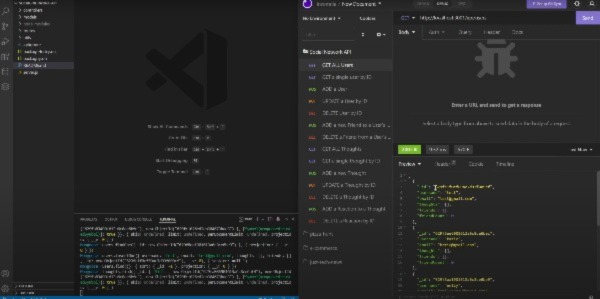

Drew Knoeller
Full Stack Web Developer
Junior Full Stack developer and recent graduate of The University of North Carolina Chapel Hill's Coding Bootcamp.
I am embracing the flow of technology and will to continue growing as the developer I aspire to be.
Featured Projects
I'm showcasing some of the projects I'm most proud of as of today.
Social Network API
The conecpt of this project was for a Social Media start up company. It uses a NoSQL database, in this case I went with Mongoose. It's designed to handle large amounts of unstructured data, and that's why Mongoose was the perfect fit!
View project repository on GitHubWork Experience
I have not had the opportunity to land a job as a developer yet being a new grad. But my work experience below should show you just how dedicated I am to a profession I put my mind to.
Certified Pharmacy Technician
Gurley's Pharmacy
March 2016 - current
Mange high volume prescription intake in a timely manner.
Responsibilities include:
- Interpret and enter new prescriptions.
- Input and access patient 3rd party for billing insurance claims.
- Inventory management.
- Great computer and data handling skills.
- Superb oral and written communication skills.
- Experience working in a fast paced environment.
- Knowledgeable with safety procedures and HIPAA confidential privacy.
Lead Pharmacy Technician
CVS Pharmacy
June 2009 - March 2016
Manager of CVS
Education
The University of North Carolina Chapel Hill
Full Stack Web Development Program
Certificate of Completion
Alamance Community College
Graphic Design
Certificate of Completion